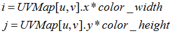

The QueryUVMap function calculates the UV map from the depth image. The UV map is a PXC[M]PointF32 array of size depth width*height. Each pixel value is a pair of resolution-normalized multipliers that can be used to map the depth coordinates to the color coordinates as follows:

where (u,v) is the depth pixel, and (i,j) is the mapped color pixel.
|